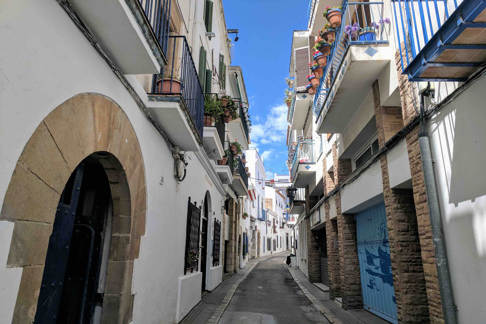

Restaurants & Bars
There's a great variety of restaurants & bars catering to all needs in the Sitges area.
Sitges - Restaurants - Traditional Spanish
- La Santa Maria (large outside terrace opposite the beach)
- Can Marti (side street just up from the beach with tables both inside and outside)
Sitges - Restaurants - Tapas
- Nem (creative tapas, eat inside)
- El Pou (creative tapas, eat inside)
- El Cable (eat inside)
- La Picara (eat inside)
Sitges - Restaurants - Formal
- La Fragata (you can eat outdoor at the foot of the church opposite the beach)
- Al Fresco (Dine inside but lovely setting)
- Komokieras (dine inside)
- 33 Fusion (dine inside)
- Mama 5 (dine inside or on street side tables)
Sitges - Restaurants - Informal
- Beach House (Indonesian/Asian/asutralian fusion with outside terrace opposite the beach)
- Pizza Emporio (pizza, pasta, salads with tables both outside and inside)
- Buenos Aires (Argentianian but can order from Sushi and Italian restaurants next door too)
- Picnic (Meditterean/Fushion)
- Tagliatella (Italian big portions of pizza, pasta, risotto, tables both outside and inside)
Sitges - Bars
Countless bars....some of the favourites are : Casablanca Cocktail Bar - El Piano, Pub Voramar - El GinTub - El Cable Bar - Platjador Rooftop bar - Beso de Sitges - Bar 7, El Sotano De Mam - Dark Sitges Bar - Cristal Bar - Nirvana Lounge - Las Vegas Sitges and Sports Bar under Hotel Subur.